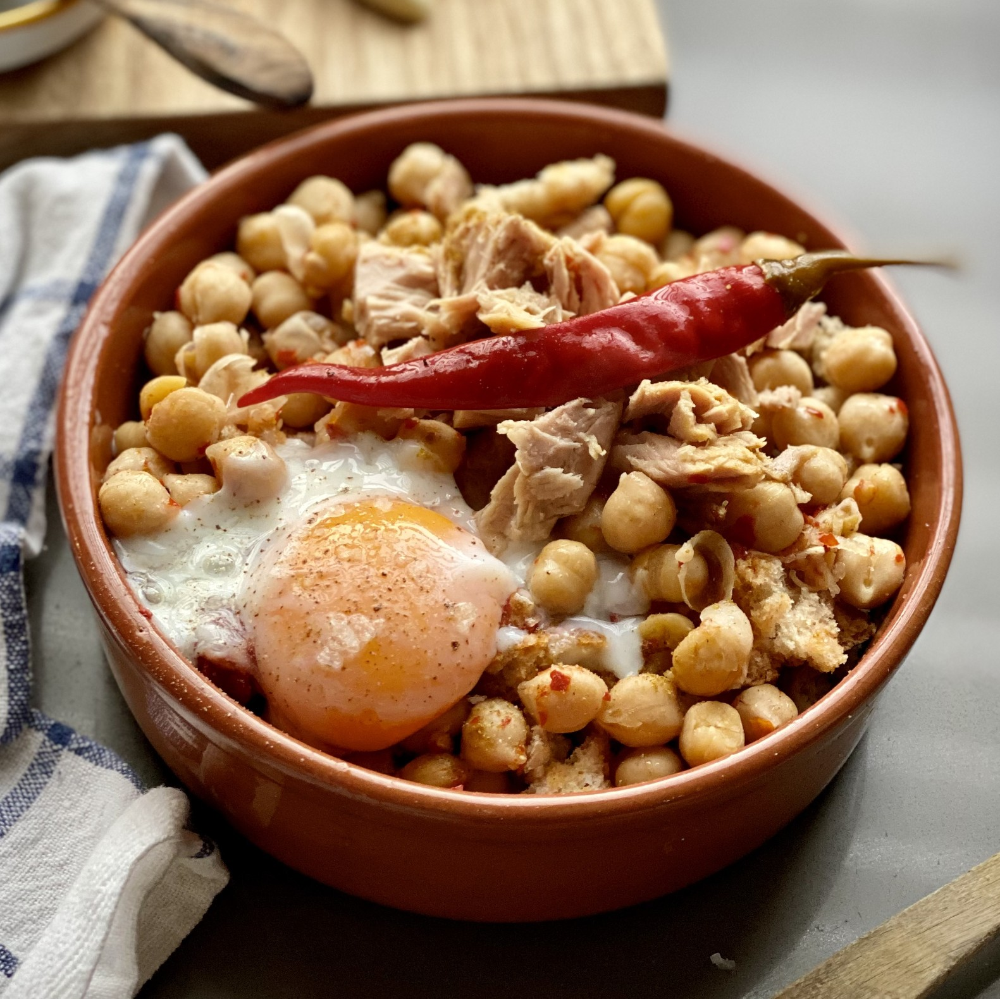

Lablebi

A dish from the people, for the people
Lablebi is a flavorful and hearty Tunisian chickpea stew, perfect for the winter season.
It is a humble and inexpensive dish that has become a staple for many Tunisians.
Ingredients
- 2 cups dried chickpeas
- 1 teaspoon baking soda
- 4 slices bread
- 2 teaspoons ground cumin
- 1 teaspoon ground caraway
- 2 tablespoons harissa
- 1 lemon
- 4 cloves garlic
- 1 teaspoon salt
- 3 tablespoons olive oil
- 3 tablespoons white vinegar
- 4 eggs
- Salt
- 250 grams of canned tuna
Instructions
- Soak the chickpeas in a large amount of water with baking soda for 12 hours.
- After soaking, drain and rinse the chickpeas thoroughly.
- Cook the chickpeas and two pressed cloves of garlic in 4 cups (1 liter) of water, without salt, and over high heat for 15 minutes.
- Reduce the heat to medium, cover and cook for 1 hour.
- Skim the white foam that may form and add water to keep chickpeas immersed
- Cook until the chickpeas are tender.
- Add salt to the chickpeas 5 minutes before the end of cooking.
Seasoning
- In a bowl, add the lemon juice, olive oil, remaining garlic, harissa, caraway and half of the cumin. Add salt and mix well with a whisk. Set aside.
Poached eggs
- In a saucepan, bring 3 cups (750ml) of water with 3 tablespoons of vinegar to a boil.
- Break the eggs in small saucers, taking care not to break the yolk. Set aside.
- When the water comes to a boil, give it a whirl with a fork or a whisk, with a circular motion (like a whirlpool).
- Slide the eggs one at a time. The rotating movement allows the white to immediately wrap the yolk.
- Poach for 3 to 4 minutes while keeping the water simmering.
- Remove the egg with a slotted spoon and place in a bowl of ice water for 3 seconds to stop the cooking. Then, place on a cloth to drain.
- Season the poached eggs with salt about 2 minutes after cooking. Keep the eggs warm between two plates.
Assembly
- In a deep dish or large bowl, place a few pieces of bread.
- Laden over chickpeas with a little of the broth.
- Place a poached egg on top, as well as tuna and olives.
- Add 2 tablespoons of seasoning.
- Sprinkle with remaining cumin. Enjoy very hot.
Return to main page